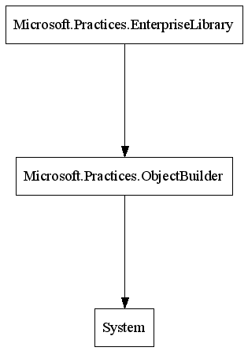
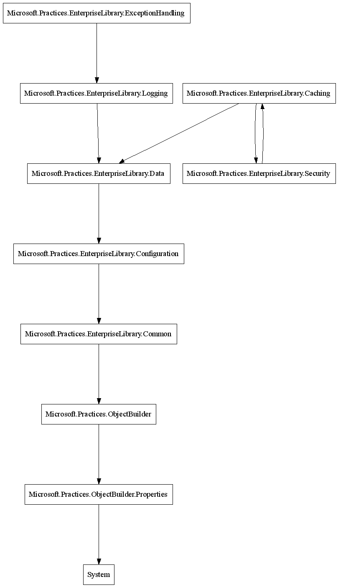
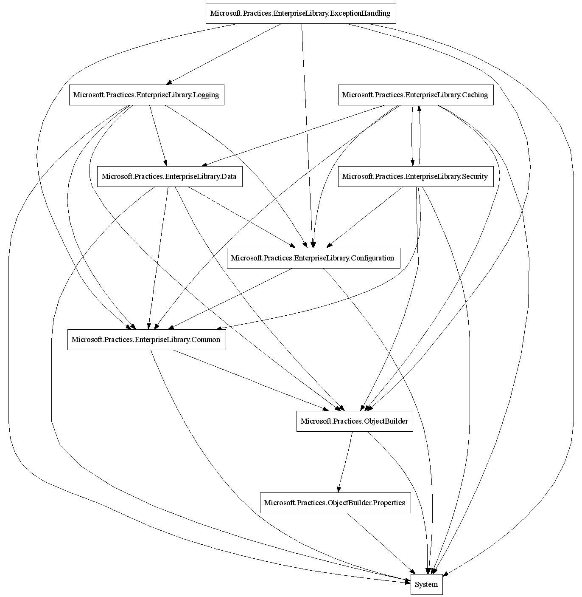
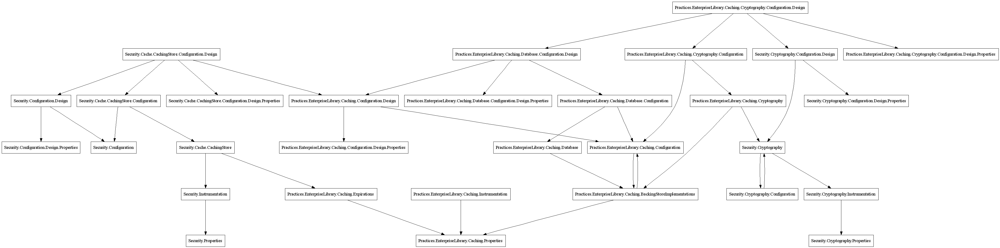
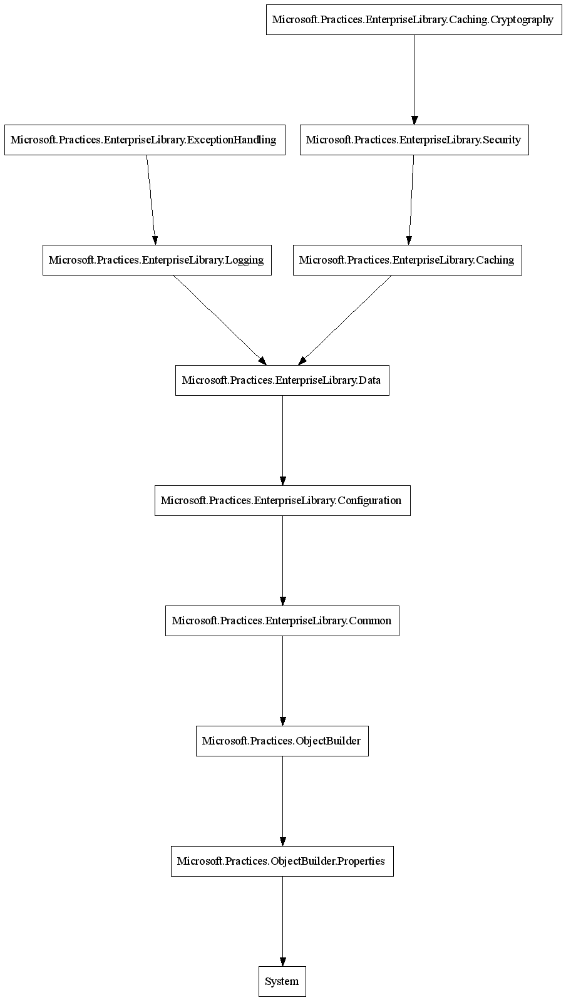
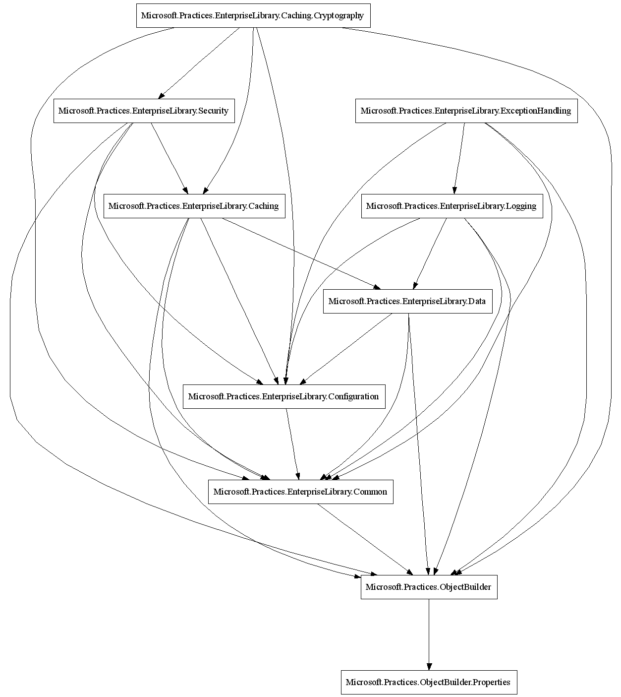
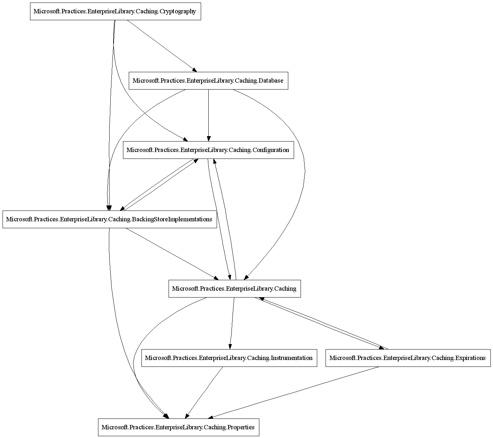

Ideally, the software architect will specify the intended dependencies (or rather, dependency rules) for some module before code is written. However, by creating a diagram of the dependencies, it is also possible to explore and document the dependencies of an existing piece of software. Both ways of proceeding are especially useful to prevent the dreaded cyclic dependencies, which usually result in a tangled monolith of interdependencies, making a software unmaintainable in a quite short period of time.
ILDASMDC has proven its usefulness (and stability) in a project of 25 developers with now more than 2 million LOC.
set ILDASM_EXE=C:\Program Files\Microsoft Visual Studio 8\SDK\v2.0\Bin\ildasm.exe set DOT_EXE=C:\Program Files\ATT\Graphviz\bin\dot.exe
ILDASMDependencyChecker.** ---> antlr.**
ILDASMDependencyChecker.** ---! System.Windows.Forms.**
The two asterisks ** are the abbreviation for "a class name, including a namespace." The two rules thus mean:
All classes (and enums, methods, ...) in and below the namespace ILDASMDependencyChecker may use all classes (structs, delegates, ...) in and below the antlr namespace.
All classes (etc.) in and below the namespace ILDASMDependencyChecker must not use any class (etc.) from the System.Windows.Forms namespace tree.The idea is that rules like these are defined by the software architect(s) and checked every time a build is run. When rules are violated, ILDASMDC will write something like the following and return with exit code 3:
**** Illegal dependency ILDASMDependencyChecker.DependencyGrapher/Node::.ctor ---> ILDASMDependencyCheckerTests.TestClass/InnerTestClass
(probably at src\ILDASMDependencyChecker\DependencyGrapher.cs:80)
A violation of the rules should be like a compile time error: It breaks the build. Hence, a defined (static) software architecture can no longer degrade to some tangled web of dependencies, which will become unmaintainable over time.
ILDASMDC can also produce a DOT graph showing dependencies. This is not as useful as it sounds to most people: Defining and checking dependency rules should be the predominant goal. However, there are two applications for this feature:
ILDASMDependencyChecker /f=myrules.dep myproj*.dll myproj*.exe
This will output all the dependencies in all myproj* .Net assemblies in the current directory. It is good practice to have a naming convention for the assemblies of a project; by this, the project's own assemblies can easily be distinguished from other assemblies (usually copied ones) in the same directory.
The complete usage of ILDASMDependencyChecker is explained here:
Usage:
ILDASMDependencyChecker [options] [<filename> | @<file with filenames in it>] ...
where <filename> can be the name of
a .Net-DLL-Assembly
a .Net-EXE-Assembly
a UTF8 .il-file with quoted names
Typical uses:
* Check dependencies in My.DLL:
ILDASMDependencyChecker /f=MyDependencies.dep /r My.dll
or
ildasm.exe /UTF8 /QUOTEALLNAMES /LINENUM /OUT=My.il My.DLL
ILDASMDependencyChecker /f=MyDependencies.dep My.il
* Produce graph of dependencies in My.DLL:
ILDASMDependencyChecker /f=MyDependencies.dep My.DLL /d=My.dot
dot -Tgif -oMy.gif My.dot
All messages of ILDASMDependencyChecker are written to Console.Out.
Options:
/v Verbose. Shows regular expressions used for checking and
all checked dependencies. Attention: Place /v BEFORE any
/f or /d option to see the regular expressions.
/r Remember last checking time for each input file somewhere in temp
directory; do dependecy checking for an assembly or .il-file
only if it has changed since last checking time (or no time has
been remembered for this file).
/f=<rule file> A file of dependency specifications - one specification
per line. Multiple dependency files can be specified.
Currently, the following lines are supported:
empty line ... ignored
// comment ... ignored
# comment ... ignored
NAME := pattern ... define abbreviation which is replaced
in patterns before processing. NAME
must be uppercase only (but it can
contain digits, underscores etc.).
Longer names are preferred to shorter
ones during replacement. The pattern
on the right side can in turn use
abbreviations. Abbreviation processing
is done before all reg.exp. replacements
described below.
pattern ---> pattern ... allowed dependency. The second
pattern may contain back-references
of the form \1, \2 etc. that are
matched against corresponding (...)
groups in the first pattern.
pattern ---! pattern ... forbidden dependency. This can be used
to exclude certain possibilities for
specific cases instead of writing many
"allowed" rules.
pattern ---? pattern ... questionable dependency. If a dependency
matches such a rule, a warning will be
emitted. This is useful for rules that
should be removed, but have to remain
in place for pragmatic reasons (only
for some time, it is hoped).
NAME :=
<arbitrary lines except =:>
=: ... definition of a rule macro. The
arbitrary lines can contain the strings
\L and \R, which are replaced with the
corresponding patterns from the macro
use. NAME need not consist of letters
only; also names like ===>, :::>, +++>
etc. are allowed and quite useful.
pattern NAME pattern ... Use of a defined macro.
% pattern (with at least one group)
... Define output in DAG graph (substring
matching first group is used as label).
If the group is empty, the dependency
is not shown in the graph.
Useful only with /d option.
For an example of a dependency file, see near end of this help text.
A pattern can be specified in three ways:
^regexp$ ... matched against a declaration
("declarations" see below)
^regexp ... the regexp is expanded to up to four
different forms, all of which are
matched against declarations:
^regexp$ - for matching a class name
^regexp(/<ident>)*$ - for matching nested classes
(if regexp contains no / )
<ident> is the pattern
matching an identifier.
^regexp::<ident>$ - for matching methods
(if regexp contains no ::)
^regexp(/<ident>)*::ident$ - for methods of nested classes
(if regexp contains no / and no ::)
wildcardpath ... first, the following replacements are done:
. is replaced with the reg.exp. [.] (matches single period)
* is replaced with the reg.exp. for an <ident> (a "name")
** is usually replaced with <ident>(?:.<ident>)* (a
"path").
(?: in a reg.exp.means that the parentheses do not
count as numbered group when matching \1, \2, etc.)
However, if there is a slash (/) somewhere to the left
of the **, it is replaced with <ident>(?:/<ident>)*,
i.e., the idents are separated by /. This can be used
to match inner class hierarchies.
After the wildcard replacemants, suffixes are added as for
^regexp.
Patterns are matched against declarations. A declaration is
retrieved from the .il file as a string of one of the forms
namespace.classname
namespace.classname/nestednames
namespace.classname::method
namespace.classname/nestednames::method
Inside namespace, elements are separated by a period (.).
That means that the LAST period (before an optional ::)
separates the namespace from the classname. If there is
no namespace, there is no leading . before the classname.
Inside nestednames, sub-nestings are separated by a slash (/).
/d=<dot file> Create output of dependencies in AT&T DOT format.
By default, ILDASMDependencyChecker tries to remove transitive
edges - i.e., if a uses b, b uses c, but also a uses c, then
the last edge is not shown. The algorithm for this will
sometimes choose funny edges for removal ...
/t Show also transitive edges in DOT graph.
/i[=<N>] For each illegal edge (i.e., edge not allowed by
the dependency file), show an example of a concrete illegal
dependency in the DOT graph. N is the maximum width of strings
used; the default is 80. Graphs can become quite cluttered
with this option.
Example of a dependency file with some important dependencies (all
using the wildcardpath syntax):
// Every class may use all classes from its own namespace.
(**).* ---> \1.*
// Special dependency for class names without namespace
// (the pattern above will not work, because it contains a
// period): A class from the global namespace may use
// all classes from that namespace.
* ---> *
// Every class may use all classes from child namespaces
// of its own namespace.
(**).* ---> \1.**.*
// Every class may use all of System.
** ---> System.**
// Use ALL as abbreviation for ILDASMDependencyChecker.**
ALL := ILDASMDependencyChecker.**
// All DependencyChecker classes must not use Windows Forms
// (even though in principle, all classes may use all of
// System according to the previous ---> rule).
ALL ---! System.Windows.Forms.**
// All DependencyChecker classes may use classes from antlr.
ALL ---> antlr.**
// In DAG output, identify each object by its path (i.e.
// namespace).
% (**).*
// Classes without namespace are identified by their class name:
% (*)
// Classes in System.* are identified by the empty group, i.e.,
// they (and arrows reaching them) are not shown at all.
% ()System.**
Exit codes:
0 All dependencies ok (including questionable rules).
1 Usage error.
2 Cannot load dependency file (syntax error or file not found).
3 Dependencies not ok.
4 IL file specified as argument not found.
5 Other exception (e.g. parse error in IL file).
ildasmdc.bat provides a convenience wrapper around the disassembler ILDASM.exe, the actual checker ILDASMDependencyChecker.exe, and AT&T's DOT.exe (if you want to see a graph). Since version 1.10, ILDASMDependencyChecker internally calls ILDASM if passed a .DLL or .EXE, so the usefulness of this wrapper has declined sharply.
ildasmdc.bat is used as follows:
ILDASMDC [/v] [/f=rule file] ... [/n] [/g=GIF file] [/i] [/t] directory_with_.Net_DLLs_and_EXEs ...
| /v | Verbose mode—this is useful to check which regular expressions are used for dependency matching. The output will be quite long if you specify this. |
| /f=rule file | specifies a rule file to be used. For formats of rules, see "Usage page" below and the following example sections. |
| /n | Do not read StandardDependencies.dep. |
| /g=GIF file | Create a GIF image showing the dependency graph. Units shown (classes, namespaces, methods, ...) are selected on the basis of regular expressions—see "Usage page" below and the following example sections. By an algorithm known as "transitive reduction," the number of shown edges is reduced as follows: If A uses B, and B uses C, and A also uses C, the last edge is not shown in the graph (because it is implied by A -> B -> C). |
| /i | If /g is specified, print one illegal dependency (according to the rule file) near a dependency edge. |
| /t | If /g is specified, print also transitive edges. This will usually produce a huge number of lines in your picture and make it totally useless for presentation purposes. On the other hand, this is necessary if you want to extract dependency rules from a dependency graph—then you need all dependencies. |
| directory_with_.Net_DLLs_and_EXEs | - One or more directories which are traversed for DLLs and EXEs to be analyzed. The traversal is done by dir /s/b, hence subdirectories are also traversed. If this is not what you want, edit ildasmdc.bat accordingly. |
ildasmdc.bat writes its messages to standard output (file handle 1). If you expect many messages, you will want to redirect the output to a file.
In a build, you will call ILDASMDependencyChecker.EXE, and possibly DOT separately.
Please note that ILDASMDependencyChecker.EXE's options are a little different from ildasmdc.bat's:
For uses in builds, ILDASMDependencyChecker.EXE has various exit codes. Essentially, you will test for exit code = 0—this means that everything is ok; exit code = 3 is also interesting, meaning "some dependencies did not follow the rules." For the other exit codes, see the above copy of the help output of ILDASMDependencyChecker.EXE.
Here is an example scenario for dependency checking. Assume you are responsible for the design of a new GUI library which uses the MVC pattern. Let's call that new library "Yet Another GUI Library" (or "Your Advanced GUI Library"), which is abbreviated as "YAGL." The architect (you) has a vision of an architecture which decouples the implementations of the three pattern roles as cleanly as possible—preferably by namespaces. To be concrete, you start with the design and implementation of buttons. You decide that you want the following namespaces:
// MODELS:
// Abstract and standard models use the model interfaces
Yagl.Buttons.Models.** ---> Yagl.Buttons.IModels.**
// CONTROLLERS:
// Controllers call View changing methods - on a general level ...
Yagl.Buttons.Controllers.* ---> Yagl.Buttons.Views.*
// ... and for each GUI system (but not crossing
// GUI systems!)
Yagl.Buttons.Controllers.(*).** ---> Yagl.Buttons.Views.\1.**
// GUI-system dependent Controllers use common Controller code
Yagl.Buttons.Controllers.*.** ---> Yagl.Buttons.Controllers.*
// Controllers for one GUI system use methods and events from the
// corresponding native library.
Yagl.Buttons.Controllers.(*).** ---> System.GUISupport.\1.**
// Controllers influence Models; and hook themselves as listeners to Models
Yagl.Buttons.Controllers.* ---> Yagl.Buttons.IModels.**
// VIEWS:
// Views hook themselves as listeners to Models
Yagl.Buttons.Views.* ---> Yagl.Buttons.IModels.**
// GUI-system dependent Views use common View code
Yagl.Buttons.Views.*.** ---> Yagl.Buttons.Views.*
// Views for one GUI system use methods and events from the
// corresponding native library.
Yagl.Buttons.View.(*).** ---> System.GUISupport.\1.**
The last rule (but not only that one) shows how the right side of a dependency rule can reference the left side by using "back references" (this is due to an idea of Ralf Kretzschmar, a colleague on a project I'm currently working on). As in standard regular expressions, \1 references the first parenthesized group on the left side, \2 the second etc.
Your team will now start designing the classes and algorithms and then code and test along. As you have ILDASMDC in your continuous build, there is no chance that someone inadvertently introduces unwanted dependencies. At some point (which might be quite early if you practice TDD) you want to assemble a small button with a controller, a view, and a model. At this time, you will probably notice that you can build this aggregate component with your defined dependencies in any of the existing namespaces, as you need access to the class constructors of controllers and views as well as models. You should now not weaken the dependencies: This will, if done a few more times, lead to a tangled architecture, where almost everything depends on everything.
One possibility of a correct design which keeps the dependencies clean is that you define an additional namespace
// needed to create standard model via constructor
Yagl.Buttons.Standard.* ---> Yagl.Buttons.Models.**
// needed to define instance vars to models
Yagl.Buttons.Standard.* ---> Yagl.Buttons.IModels.**
// needed to create GUI-dependent controller via constructor
Yagl.Buttons.Standard.* ---> Yagl.Buttons.Controllers.*.**
// needed to create GUI-dependent view via constructor
Yagl.Buttons.Standard.* ---> Yagl.Buttons.Views.*.**
—and now you are happy: Facade classes RadioButton, ToggleButton, StandardButton, MenuButton and more can be defined in the Standard namespace by instantiating objects from the Models, Views.*, and Controllers.* namespaces.
A different concept is that instead of providing a "connecting namespace," you use dependency injection: The creation is externalized into a container (e.g. PicoContainer), which is suitably configured. In some sense, that configuration takes the role of the connecting namespace.
In later steps of designing YAGL, you might generalize the patterns above for all sorts of GUI controls, so that you end up with dependencies like
Yagl.(*).Models.** ---> Yagl.\1.IModels.**
Yagl.(*).Controllers.* ---> Yagl.\1.Views.*
Yagl.(*).Controllers.(*).** ---> Yagl.\1.Views.\2.**
Yagl.(*).Controllers.*.** ---> Yagl.\1.Controllers.*
etc.
===> :=
Yagl.\L.(*).** ---> Yagl.\R.\1.**
Yagl.\L.Models.** ---> Yagl.\R.IModels.**
Yagl.\L.Controllers.* ---> Yagl.\R.Views.*
Yagl.\L.Controllers.(*).** ---> Yagl.\R.Views.\1.**
Yagl.\L.Controllers.*.** ---> Yagl.\R.Controllers.*
=:
Buttons ===> Labels
Grids ===> Buttons
Grids ===> Labels
This feature has still not been tested extensively. I still hope to get to module checking in our large application till the end of 2007...
Here is a short explanation of a quite different dependency scenario, this time on the level of methods: An object-relational mapping I wrote does its work for searches in multiple phases (this is a sort of pipeline architecture):
ORMapping.**::*_c2t ---> ORMapping.**::*_c2t
ORMapping.**::*_t2s ---> ORMapping.**::*_t2s
ORMapping.**::*_s2r ---> ORMapping.**::*_s2r
ORMapping.**::*_r2o ---> ORMapping.**::*_r2o
ORMapping.**::* ---> ORMapping.**::*_com
// Methods may access private state (prefixed with _).
// A separate getter is provided for each phase that
// may legitimally access some field.
ORMapping.**::* ---> ORMapping.**::_*
// ORMapping may use System except Windows.Forms
ORMapping.** ---> System.**
ORMapping.** ---! System.Windows.Forms.**
// Every class may use <PrivateImplementationDetails>
ORMapping.** ---> <PrivateImplementationDetails>**
By the way, a shorter way of defining the first 4 rules would be:
ORMapping.**::*_(c2t|t2s|s2r|r2o) ---> ORMapping.**::*_\1
However, this is probably more difficult to understand than the expanded version above.
Also, in practice, the rules need to include methods for writing; and they will be more elaborate, as there will also be dependency rules between namespaces inside the ORMapping. E.g., some classes responsible for writing to the database—INSERT, UPDATE, DELETE—probably must not call, and not be called by, classes for querying the database.
The two scenarios just described are typical and intended uses for dependency checking: You (as the architect) define the dependencies up-front and have them checked during the life-time of the project. Of course, new developments and experiences might make it necessary to add new dependencies (as new modules with new namespaces or new method types are designed), and, sometimes, also the addition and modification of dependencies for existing namespaces. However, the latter can be a quite disruptive act as it might fundamentally shake the architectural foundations of the software system. When you become (or if you already are) a seasoned software architect, you will create more and more stable architectures up-front—or (more important) learn when to delay architectural decisions so that they can be arrived at when the necessary knowledge and understanding is available.
In real life, you will at times be confronted with existing software where the architecture is not clear. ILDASMDC gives you the possibility to draw diagrams of dependencies with arbitrary granularity, which can help to understand the dependencies and architecture. The goal of such understanding should always be to define the rules to be followed from that point on—probably after some clean-up (re-architecting) of the software under consideration. As a concrete example, let us find out the main dependencies in Microsoft's Enterprise Library of January 2006.
We start with graphing the main modules. Because we practice whar might be called "explorative architecturing," we allow all dependencies. We store the following in a file, say msel.dep:
** ---> **
// Show all leaf namespaces in graph
% (Microsoft.Practices.*).**
// For System and rest of Microsoft, show only one box
% (System).**
% (Microsoft).**
We call ildasmdc.bat as follows:
ildasmdc.bat /f=msel.dep /g=msel.gif "c:\Programme\Microsoft Enterprise Library January 2006\bin"
Here is the resulting diagram in msel.gif ...
A small disappointment: We were too high-level! In the next try, we go one level deeper:
** ---> **
// Show two levels below Microsoft.Practices - especially,
// below Microsoft.Practices.EnterpriseLibrary.
% (Microsoft.Practices.*.*).**
% (Microsoft.Practices.*).*
// For System and rest of Microsoft, show only one box
% (System).**
% (Microsoft).**
The same call as above now yields the following diagram:
Now we see for the first time the library's internal structure. The only obvious architectural flaw is the cyclic dependency between Caching and Security; we will explore this further in the next steps. Please remember that this diagram excludes as many transitive edges as possible—hence it might e.g. be that classes from Logging use classes from Common etc. To show the full dependencies for demonstrating the difference, let's call ILDASMDC with the /t option (/t=transitive edges):
ildasmdc.bat /f=msel.dep /g=msel.gif /t "c:\Programme\Microsoft Enterprise Library January 2006\bin"

The result is typical for a weakly layered architecture and demonstrates why the removal of transitive edges helps to understand the actual dependencies. However, we will have to return to this type of diagram later. For now, let us continue with the exploration of the cycle between Caching and Security. We only show Caching and Security, but now down to the lowest namespaces. To distinguish visually between the two, we have Caching namespaces shown in a "long" format including "Practices.EnterpriseLibrary," whereas namespaces from Security are shown in a "short" format:
** ---> **
// Show Caching and Security in detail.
% Microsoft.(Practices.EnterpriseLibrary.Caching.**).*
% Microsoft.Practices.EnterpriseLibrary.(Security.**).*
// For all the rest, show nothing
% ()**

This diagram certainly needs some detailed inspection. However, after a short time it becomes clear that Caching.Cryptography and its sub-namespaces —and only those—use modules from Security. Hence, we now reformulate the graph patterns for the complete Enterprise Library:
** ---> **
// Show two levels below Microsoft.Practices - especially,
// below Microsoft.Practices.EnterpriseLibrary.
// Caching.Cryptography is singled out, because it depends on Security.
% (Microsoft.Practices.*.*).**
% (Microsoft.Practices.*).*
% (Microsoft.Practices.EnterpriseLibrary.Caching.Cryptography).**
// For System and rest of Microsoft, show only one box
% (System).**
% (Microsoft).**
Here is the resulting picture:
Now that we have found a dependency architecture which is ok, we want to codify the dependency rules so that subsequent development cannot violate these rules. To this end, we must first show also all the transitive edges. We are no longer interested in System, because this may be used by all according to the standard rules. Therefore, we use the following graph patterns and call ILDASMDC with the /t option:
** ---> **
// Show two levels below Microsoft.Practices - especially,
// below Microsoft.Practices.EnterpriseLibrary.
// Caching.Cryptography is singled out, because it depends on Security.
% (Microsoft.Practices.*.*).**
% (Microsoft.Practices.*).*
% (Microsoft.Practices.EnterpriseLibrary.Caching.Cryptography).**
// Do not show System; for rest of Microsoft, show only one box
% ()System.**
% (Microsoft).**

The resulting graph shows us, to no-one's surprise, that Common and Configuration are used by everyone. Moreover, ObjectBuilder is also used by everyone (which is stated in the design documentation of the Enterprise Library somewhere). For the rest, we have a not too large set of specific dependencies which are easily written down. Here is the resulting list:
// Everyone in EL may use ObjectBuilder, EL.Common, and EL.Configuration
Microsoft.Practices.EnterpriseLibrary.** ---> Microsoft.Practices.ObjectBuilder.**
Microsoft.Practices.EnterpriseLibrary.** ---> Microsoft.Practices.EnterpriseLibrary.Common.**
Microsoft.Practices.EnterpriseLibrary.** ---> Microsoft.Practices.EnterpriseLibrary.Configuration.**
// EL.Logging and EL.Caching may use EL.Data
Microsoft.Practices.EnterpriseLibrary.Logging.** ---> Microsoft.Practices.EnterpriseLibrary.Data.**
Microsoft.Practices.EnterpriseLibrary.Caching.** ---> Microsoft.Practices.EnterpriseLibrary.Data.**
// EL.Security may use EL.Caching, but not EL.Caching.Cryptography
Microsoft.Practices.EnterpriseLibrary.Security.** ---> Microsoft.Practices.EnterpriseLibrary.Caching.**
Microsoft.Practices.EnterpriseLibrary.Security.** ---! Microsoft.Practices.EnterpriseLibrary.Caching.Cryptography.**
// EL.Caching.Cryptography may use EL.Security (the "backwards dependency"
// which created the loop we saw a few steps ago).
Microsoft.Practices.EnterpriseLibrary.Caching.Cryptography.** ---> Microsoft.Practices.EnterpriseLibrary.Security.**
// EL.ExceptionHandling may use EL.Logging
Microsoft.Practices.EnterpriseLibrary.ExceptionHandling.** ---> Microsoft.Practices.EnterpriseLibrary.Logging.**
As the string Microsoft.Practices.EnterpriseLibrary is occurring quite often here, it may make sense to replace it with a shorter abbreviation, e.g. as follows:
_EL := Microsoft.Practices.EnterpriseLibrary
// Everyone in EL may use ObjectBuilder, EL.Common, and EL.Configuration
_EL.** ---> Microsoft.Practices.ObjectBuilder.**
_EL.** ---> _EL.Common.**
_EL.** ---> _EL.Configuration.**
// EL.Logging and EL.Caching may use EL.Data
_EL.Logging.** ---> _EL.Data.**
_EL.Caching.** ---> _EL.Data.**
// EL.Security may use EL.Caching, but not EL.Caching.Cryptography
_EL.Security.** ---> _EL.Caching.**
_EL.Security.** ---! _EL.Caching.Cryptography.**
// EL.Caching.Cryptography may use EL.Security (the "backwards dependency"
// which created the loop we saw a few steps ago).
_EL.Caching.Cryptography.** ---> _EL.Security.**
// EL.ExceptionHandling may use EL.Logging
_EL.ExceptionHandling.** ---> _EL.Logging.**
Running ILDASMDC gives us ... what is that? Zillions of "Illegal dependencies!" What's wrong here?
Here is the first "illegal" dependency:
**** Illegal dependency Microsoft.Practices.EnterpriseLibrary.Logging.MsmqDistributor.Instrumentation.DistributorEventLogger::LogServiceStarted ---> Microsoft.Practices.EnterpriseLibrary.Logging.MsmqDistributor.Properties.Resources::get_Culture
What does Logging use here? Here is a more concise view of the dependency (you might want to highlight this with a marker on a printout of the "illegal" dependencies):
...Logging.MsmqDistributor.Instrumentation... ---> ...Logging.MsmqDistributor.Properties...It is clear now: We forgot to specify that we are not concerned about arbitrary dependencies inside toplevel namespaces of the Enterprise Library. Hence, we need the following additional rule:
// Everyone in or below a namespace EL.* may use all other namespaces in or below the same top-level EL namespace
Microsoft.Practices.EnterpriseLibrary.(*).** ---> Microsoft.Practices.EnterpriseLibrary.\1.**
But we would now also allow that Caching uses all of Caching.Cryptography! Although this is not the case today, we want to prevent it in the future (so that someone will not introduce a cyclic dependency with Security!). Let us disect Caching to find out about the concrete rules we want to allow. Here are the graph patterns for this job:
** ---> **
// Show only Caching (top level and one level below) so
// that we can find out the dependencies needed in there.
% (_EL.Caching).*
% (_EL.Caching.*).**
% ()Microsoft.**
% ()System.**
The result—with transitive edges—is as follows:
Thus, we now know which other namespaces are immediately below Caching. For all these—except Cryptography—, and also for Caching itself, we suppress the use Caching.Cryptography:
_EL.Caching.* ---! _EL.Caching.Cryptography.**
_EL.Caching.BackingStoreImplementations.** ---! _EL.Caching.Cryptography.**
_EL.Caching.Common.** ---! _EL.Caching.Cryptography.**
_EL.Caching.Configuration.** ---! _EL.Caching.Cryptography.**
_EL.Caching.Database.** ---! _EL.Caching.Cryptography.**
etc.
However, this is not at all a fool-proof set of of rules: If a new sub-namespace of Caching is introduced at some future time, that future namespace could use Cryptography. An alternative idea is to decree that all namespaces not starting with C cannot use Cryptography:
_EL.Caching.* ---! _EL.Caching.Cryptography.**
_EL.Caching.[^C]*.** ---! _EL.Caching.Cryptography.**
However, this would still allow Caching.Common and Caching.Configuration to use Caching.Cryptography. So, we add another rule:
_EL.Caching.C[^r]*.** ---! _EL.Caching.Cryptography.**
—and we could add more rules to suppress use of Cryptography by longer and longer prefixes.
In my opinion, a better idea would be that Microsoft changed the name of Caching.Cryptography to e.g. SecureCaching in the Enterprise Library: Then there would be a clear top-level acyclic dependency graph.
Together with the other rules, we get the following overall dependency rule list:
// Everyone in or below a namespace EL.* may use all other namespaces in or below the same namespace
_EL.(*).** ---> _EL.\1.**
// However, top-level Caching and Caching sub-namespaces not starting with Cry must not use Caching.Cryptography
_EL.Caching.* ---! _EL.Caching.Cryptography.**
_EL.Caching.[^C]*.** ---! _EL.Caching.Cryptography.**
_EL.Caching.C[^r]*.** ---! _EL.Caching.Cryptography.**
_EL.Caching.Cr[^y]*.** ---! _EL.Caching.Cryptography.**
// Everyone in EL may use ObjectBuilder, EL.Common, and EL.Configuration
_EL.** ---> Microsoft.Practices.ObjectBuilder.**
_EL.** ---> _EL.Common.**
_EL.** ---> _EL.Configuration.**
// EL.Logging and EL.Caching may use EL.Data
_EL.Logging.** ---> _EL.Data.**
_EL.Caching.** ---> _EL.Data.**
// EL.Security may use EL.Caching, but not EL.Caching.Cryptography
_EL.Security.** ---> _EL.Caching.**
_EL.Security.** ---! _EL.Caching.Cryptography.**
// EL.Caching.Cryptography may use EL.Security (the "backwards dependency")
_EL.Caching.Cryptography.** ---> _EL.Security.**
// EL.ExceptionHandling may use EL.Logging
_EL.ExceptionHandling.** ---> _EL.Logging.**
A final run of ILDASMDC over the Enterprise Library now yields no messages—hence, our rules encompass all current dependencies. On the other hand, they are sufficiently strong to prevent future corruption of the static architecture during maintenance and redesign.
For teaching developers about the allowed dependencies, I would start with the clean picture to show the principial layering of the library:
For detailed dependencies between modules, the architect could then
A. Couldn't there be an option showing all cyclic dependencies?— —The idea is that architecture is not arrived at by "reacting to symptoms" (e.g. to cycles), but on the contrary by "acting," i.e., by wanting that certain dependencies may occur, whereas others do not occur. Thus, the goal is not that a tool emits warnings, but that an architect prescribes allowed dependency patterns. These might also include cycles at certain or even many places. The object-relational mapping mentioned above, for example, had—intentionally—almost no restrictions on class dependencies, but very restrictive rules for method dependencies.
B. Couldn't the dependency rule language allow for "except rules," e.g., "All sub-namespaces of A except A.B may use C"?— —
1. Parsing of .IL files is very heuristic. I suspect that with method dependencies, a dependency on a return type might be reported incorrectly (namely with the previous method instead of the one having the return type). This needs to be checked and corrected, if actually wrong.
2. Provide an MSBuild task to run ILDASMDC in automated builds.
3. Upgrade to ANTLR 3 (for performance reasons).
4. Make ILDASMDC multi-threaded to increase performance on multi-core and multi-processor machines.
HKEY_LOCAL_MACHINE\SOFTWARE\Microsoft\.NETFramework\sdkInstallRootv2.0 and HKEY_LOCAL_MACHINE\SOFTWARE\Microsoft\.NETFramework\sdkInstallRootv3.0, append \bin to it and try to run ILDASM.EXE from the resulting directories with options /NOBAR /UTF8 /QUOTE /LINE /OUT=.... With this feature, use of ildasm.bat is discouraged.
Encoding.UTF8, but then also with Encoding.Unicode if the former fails.
© 2006-2007 HMMüller